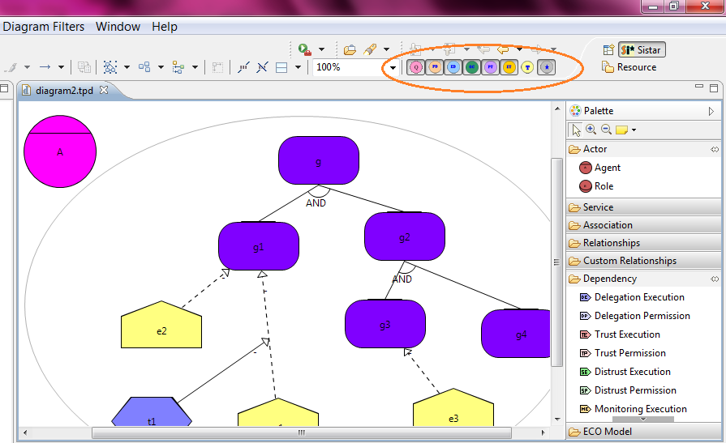

Diagram Filter
When the diagram is activated, some filter buttons appear on the top right side

- All Model Filter: Shows all construct
- Tropos Model Filter: Shows delegation execution in Tropos style
- Execution Trust Model Filter: Shows Trust Execution relation
- Permission Trust Model Filter: Shows Trust Permission relation
- Organisational Chart Model Filter: Shows Supervise relation
- Execution Delegation Model Filter: Shows Delegation Execution relation
- Permission Delegation Model Filter: Shows Delegation Permission relation
- Quantitative Qualitative Model Filter: Toggle between Quantitative and Qualitative View